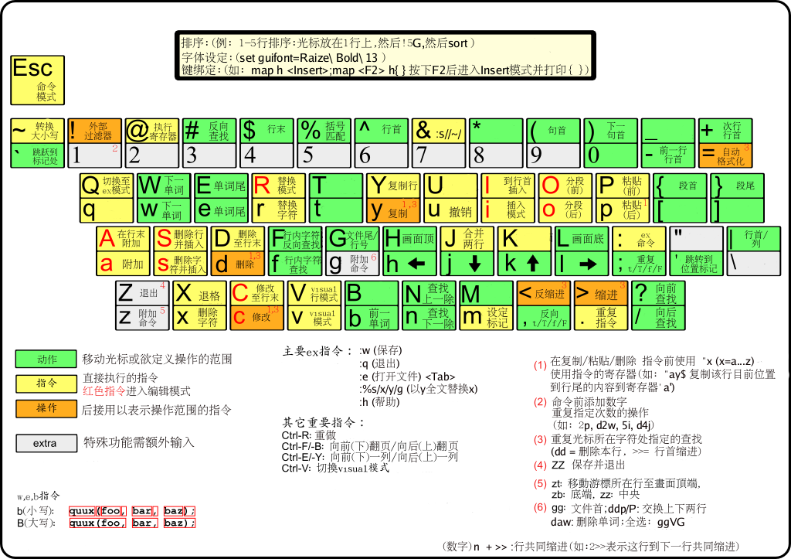

一、移动光标
1、左移h、右移l、下移j、上移k
2、向下翻页ctrl + f，向上翻页ctrl + b
3、向下翻半页ctrl + d，向上翻半页ctrl + u
4、移动到行尾$，移动到行首0（数字），移动到行首第一个字符处^
5、移动光标到下一个句子 ），移动光标到上一个句子（
6、移动到段首{，移动到段尾}
7、移动到下一个词w，移动到上一个词b
8、移动到文档开始gg，移动到文档结束G
9、移动到匹配的{}.().[]处%
10、跳到第n行 ngg 或 nG 或 :n
11、移动光标到屏幕顶端H，移动到屏幕中间M，移动到底部L
12、读取当前字符，并移动到本屏幕内下一次出现的地方 *
13、读取当前字符，并移动到本屏幕内上一次出现的地方 #
二、查找替换
1、光标向后查找关键字 #或者g#
2、光标向前查找关键字 或者g
3、当前行查找字符 fx, Fx, tx, Tx
4、基本替换 :s_s1_s2 （将下一个s1替换为s2）
5、全部替换 :%s_s1_s2
6、只替换当前行 :s_s1_s2/g
7、替换某些行 :n1,n2 s_s1_s2/g
8、搜索模式为 /string，搜索下一处为n，搜索上一处为N
9、制定书签 mx, 但是看不到书签标记，而且只能用小写字母
10、移动到某标签处 `x，1旁边的键
11、移动到上次编辑文件的位置 `.
PS：.代表一个任意字符 *代表一个或多个字符的重复
正则表达式的内容将会在后续文章中整理
三、编辑操作
1、光标后插入a, 行尾插入A
2、后插一行插入o，前插一行插入O
3、删除字符插入s， 删除正行插入S
4、光标前插入i，行首插入I
5、删除一行dd，删除后进入插入模式cc或者S
6、删除一个单词dw，删除一个单词进入插入模式cw
7、删除一个字符x或者dl，删除一个字符进入插入模式s或者cl
8、粘贴p，交换两个字符xp，交换两行ddp
9、复制y，复制一行yy
10、撤销u，重做ctrl + r，重复.
11、智能提示 ctrl + n 或者 ctrl + p
12、删除motion跨过的字符，删除并进入插入模式 c{motion}
13、删除到下一个字符跨过的字符，删除并进入插入模式，不包括x字符 ctx
14、删除当前字符到下一个字符处的所有字符，并进入插入模式，包括x字符，cfx
15、删除motion跨过的字符，删除但不进入插入模式 d{motion}
16、删除motion跨过的字符，删除但不进入插入模式，不包括x字符 dtx
17、删除当前字符到下一个字符处的所有字符，包括x字符 dfx
18、如果只是复制的情况时，将12-17条中的c或d改为y
19、删除到行尾可以使用D或C
20、拷贝当前行 yy或者Y
21、删除当前字符 x
22、粘贴 p
23、可以使用多重剪切板，查看状态使用:reg，使用剪切板使用”，例如复制到w寄存器，”wyy，或者使用可视模式v”wy
24、重复执行上一个作用使用.
25、使用数字可以跨过n个区域，如y3x，会拷贝光标到第三个x之间的区域，3j向下移动3行
26、在编写代码的时候可以使用]p粘贴，这样可以自动进行代码缩进
27、 >> 缩进所有选择的代码
28、 << 反缩进所有选择的代码
29、gd 移动到光标所处的函数或变量的定义处
30、K 在man里搜索光标所在的词
31、合并两行 J
32、若不想保存文件，而重新打开 :e!
33、若想打开新文件 :e filename，然后使用ctrl + ^进行文件切换
四、窗口操作
1、分隔一个窗口:split或者:vsplit
2、创建一个窗口:new或者:vnew
3、在新窗口打开文件:sf {filename}
4、关闭当前窗口:close
5、仅保留当前窗口:only
6、到左边窗口 ctrl + w, h
7、到右边窗口 ctrl + w, l
8、到上边窗口 ctrl + w, k
9、到下边窗口 ctrl + w, j
10、到顶部窗口 ctrl + w, t
11、到底部窗口 ctrl + w, b
五、宏操作
1、开始记录宏操作q[a-z]，按q结束，保存操作到寄存器[a-z]中
2、@[a-z]执行寄存器[a-z]中的操作
3、@@执行最近一次记录的宏操作
六、可视操作
1、进入块可视模式 ctrl + v
2、进入字符可视模式 v
3、进入行可视模式 V
4、删除选定的块 d
5、删除选定的块然后进入插入模式 c
6、在选中的块同是插入相同的字符 I\ESC
七、跳到声明
1、[[ 向前跳到顶格第一个{
2、[] 向前跳到顶格第一个}
3、]] 向后跳到顶格的第一个{
4、]] 向后跳到顶格的第一个}
5、[{ 跳到本代码块的开头
6、]} 跳到本代码块的结尾
八、挂起操作
1、挂起Vim ctrl + z 或者 :suspend
2、查看任务 在shell中输入 jobs
3、恢复任务 fg [job number]（将后台程序放到前台）或者 bg [job number]（将前台程序放到后台）
4、执行shell命令 :!command
5、开启shell命令 :shell，退出该shell exit
6、保存vim状态 :mksession name.vim
7、恢复vim状态 :source name.vim
8、启动vim时恢复状态 vim -S name.vim
最后放个vim快捷键图吧。
